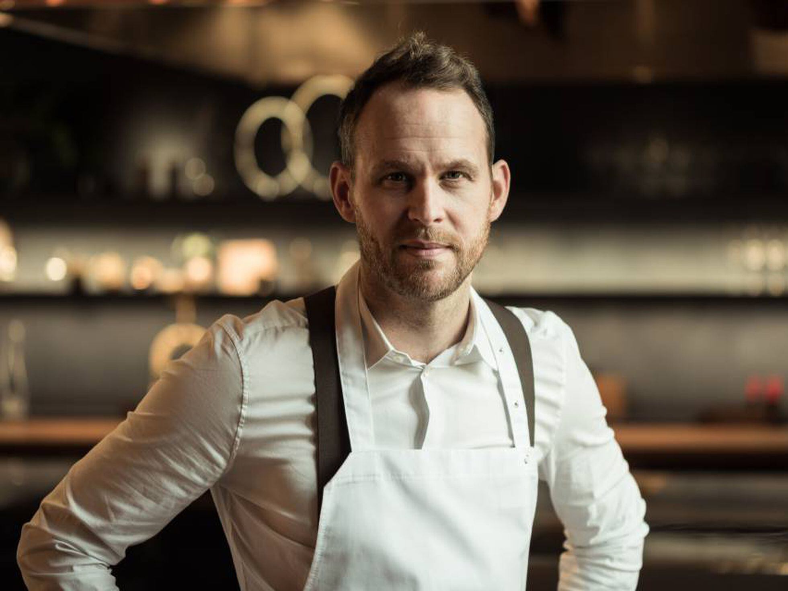

Dabid Muñoz, es un cocinero español especializado en cocina de vanguardia. Su restaurante DiverXo ha recibido tres estrellas Michelin.
René Redzepi, es el jefe de cocina y copropietario del restaurante Noma de Copenhague. Tiene tres estrellas Michelin.
Joan Roca i Fontané, es un cocinero y chef español del restaurante El Celler de Can Roca. Roca es considerado uno de los mejores chefs del mundo.
Massimo Bottura, es un chef italiano. Es conocido por ser el chef propietario de Osteria Francescana, un restaurante de tres estrellas Michelin.
Andoni Luis Aduriz, es un cocinero español. Al frente del restaurante Mugaritz, es en la actualidad uno de los chefs más creativos e influyentes del panorama internacional.

Björn Frantzén, es chef y exfutbolista. Dirige Frantzén (Estocolmo) y Zén (Singapur), restaurantes que cuentan con tres estrellas Michelin cada uno, y posee otros restaurantes en Estocolmo y Asia.